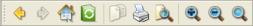

QToolButton Class
The QToolButton class provides a quick-access button to commands or options, usually used inside a QToolBar. More...
| Header: | #include <QToolButton> |
| qmake: | QT += widgets |
| Inherits: | QAbstractButton |
Public Types
| enum | ToolButtonPopupMode { DelayedPopup, MenuButtonPopup, InstantPopup } |
Properties
- arrowType : Qt::ArrowType
- autoRaise : bool
- popupMode : ToolButtonPopupMode
- toolButtonStyle : Qt::ToolButtonStyle
Public Functions
| QToolButton(QWidget *parent = nullptr) | |
| virtual | ~QToolButton() |
| Qt::ArrowType | arrowType() const |
| bool | autoRaise() const |
| QAction * | defaultAction() const |
| QMenu * | menu() const |
| QToolButton::ToolButtonPopupMode | popupMode() const |
| void | setArrowType(Qt::ArrowType type) |
| void | setAutoRaise(bool enable) |
| void | setMenu(QMenu *menu) |
| void | setPopupMode(QToolButton::ToolButtonPopupMode mode) |
| Qt::ToolButtonStyle | toolButtonStyle() const |
Reimplemented Public Functions
| virtual QSize | minimumSizeHint() const override |
| virtual QSize | sizeHint() const override |
Public Slots
| void | setDefaultAction(QAction *action) |
| void | setToolButtonStyle(Qt::ToolButtonStyle style) |
| void | showMenu() |
Signals
| void | triggered(QAction *action) |
Protected Functions
| void | initStyleOption(QStyleOptionToolButton *option) const |
Reimplemented Protected Functions
| virtual void | actionEvent(QActionEvent *event) override |
| virtual void | changeEvent(QEvent *e) override |
| virtual void | enterEvent(QEvent *e) override |
| virtual bool | event(QEvent *event) override |
| virtual bool | hitButton(const QPoint &pos) const override |
| virtual void | leaveEvent(QEvent *e) override |
| virtual void | mousePressEvent(QMouseEvent *e) override |
| virtual void | mouseReleaseEvent(QMouseEvent *e) override |
| virtual void | nextCheckState() override |
| virtual void | paintEvent(QPaintEvent *event) override |
| virtual void | timerEvent(QTimerEvent *e) override |
Detailed Description
A tool button is a special button that provides quick-access to specific commands or options. As opposed to a normal command button, a tool button usually doesn't show a text label, but shows an icon instead.
Tool buttons are normally created when new QAction instances are created with QToolBar::addAction() or existing actions are added to a toolbar with QToolBar::addAction(). It is also possible to construct tool buttons in the same way as any other widget, and arrange them alongside other widgets in layouts.
One classic use of a tool button is to select tools; for example, the "pen" tool in a drawing program. This would be implemented by using a QToolButton as a toggle button (see setCheckable()).
QToolButton supports auto-raising. In auto-raise mode, the button draws a 3D frame only when the mouse points at it. The feature is automatically turned on when a button is used inside a QToolBar. Change it with setAutoRaise().
A tool button's icon is set as QIcon. This makes it possible to specify different pixmaps for the disabled and active state. The disabled pixmap is used when the button's functionality is not available. The active pixmap is displayed when the button is auto-raised because the mouse pointer is hovering over it.
The button's look and dimension is adjustable with setToolButtonStyle() and setIconSize(). When used inside a QToolBar in a QMainWindow, the button automatically adjusts to QMainWindow's settings (see QMainWindow::setToolButtonStyle() and QMainWindow::setIconSize()). Instead of an icon, a tool button can also display an arrow symbol, specified with arrowType.
A tool button can offer additional choices in a popup menu. The popup menu can be set using setMenu(). Use setPopupMode() to configure the different modes available for tool buttons with a menu set. The default mode is DelayedPopupMode which is sometimes used with the "Back" button in a web browser. After pressing and holding the button down for a while, a menu pops up showing a list of possible pages to jump to. The timeout is style dependent, see QStyle::SH_ToolButton_PopupDelay.
 |
| Qt Assistant's toolbar contains tool buttons that are associated with actions used in other parts of the main window. |
See also QPushButton, QToolBar, QMainWindow, QAction, and GUI Design Handbook: Push Button.
Member Type Documentation
enum QToolButton::ToolButtonPopupMode
Describes how a menu should be popped up for tool buttons that has a menu set or contains a list of actions.
| Constant | Value | Description |
|---|---|---|
QToolButton::DelayedPopup | 0 | After pressing and holding the tool button down for a certain amount of time (the timeout is style dependent, see QStyle::SH_ToolButton_PopupDelay), the menu is displayed. A typical application example is the "back" button in some web browsers's tool bars. If the user clicks it, the browser simply browses back to the previous page. If the user presses and holds the button down for a while, the tool button shows a menu containing the current history list |
QToolButton::MenuButtonPopup | 1 | In this mode the tool button displays a special arrow to indicate that a menu is present. The menu is displayed when the arrow part of the button is pressed. |
QToolButton::InstantPopup | 2 | The menu is displayed, without delay, when the tool button is pressed. In this mode, the button's own action is not triggered. |
Property Documentation
arrowType : Qt::ArrowType
This property holds whether the button displays an arrow instead of a normal icon
This displays an arrow as the icon for the QToolButton.
By default, this property is set to Qt::NoArrow.
Access functions:
| Qt::ArrowType | arrowType() const |
| void | setArrowType(Qt::ArrowType type) |
autoRaise : bool
This property holds whether auto-raising is enabled or not.
The default is disabled (i.e. false).
This property is currently ignored on macOS when using QMacStyle.
Access functions:
| bool | autoRaise() const |
| void | setAutoRaise(bool enable) |
popupMode : ToolButtonPopupMode
describes the way that popup menus are used with tool buttons
By default, this property is set to DelayedPopup.
Access functions:
| QToolButton::ToolButtonPopupMode | popupMode() const |
| void | setPopupMode(QToolButton::ToolButtonPopupMode mode) |
toolButtonStyle : Qt::ToolButtonStyle
This property holds whether the tool button displays an icon only, text only, or text beside/below the icon.
The default is Qt::ToolButtonIconOnly.
To have the style of toolbuttons follow the system settings, set this property to Qt::ToolButtonFollowStyle. On Unix, the user settings from the desktop environment will be used. On other platforms, Qt::ToolButtonFollowStyle means icon only.
QToolButton automatically connects this slot to the relevant signal in the QMainWindow in which is resides.
Access functions:
| Qt::ToolButtonStyle | toolButtonStyle() const |
| void | setToolButtonStyle(Qt::ToolButtonStyle style) |
Member Function Documentation
QToolButton::QToolButton(QWidget *parent = nullptr)
Constructs an empty tool button with parent parent.
[slot] void QToolButton::setDefaultAction(QAction *action)
Sets the default action to action.
If a tool button has a default action, the action defines the following properties of the button:
- checkable
- checked
- enabled
- font
- icon
- popupMode (assuming the action has a menu)
- statusTip
- text
- toolTip
- whatsThis
Other properties, such as autoRepeat, are not affected by actions.
See also defaultAction().
[slot] void QToolButton::showMenu()
Shows (pops up) the associated popup menu. If there is no such menu, this function does nothing. This function does not return until the popup menu has been closed by the user.
[signal] void QToolButton::triggered(QAction *action)
This signal is emitted when the given action is triggered.
The action may also be associated with other parts of the user interface, such as menu items and keyboard shortcuts. Sharing actions in this way helps make the user interface more consistent and is often less work to implement.
[virtual] QToolButton::~QToolButton()
Destroys the object and frees any allocated resources.
[override virtual protected] void QToolButton::actionEvent(QActionEvent *event)
Reimplements: QWidget::actionEvent(QActionEvent *event).
[override virtual protected] void QToolButton::changeEvent(QEvent *e)
Reimplements: QAbstractButton::changeEvent(QEvent *e).
QAction *QToolButton::defaultAction() const
Returns the default action.
See also setDefaultAction().
[override virtual protected] void QToolButton::enterEvent(QEvent *e)
Reimplements: QWidget::enterEvent(QEvent *event).
[override virtual protected] bool QToolButton::event(QEvent *event)
Reimplements: QAbstractButton::event(QEvent *e).
[override virtual protected] bool QToolButton::hitButton(const QPoint &pos) const
Reimplements: QAbstractButton::hitButton(const QPoint &pos) const.
[protected] void QToolButton::initStyleOption(QStyleOptionToolButton *option) const
Initialize option with the values from this QToolButton. This method is useful for subclasses when they need a QStyleOptionToolButton, but don't want to fill in all the information themselves.
See also QStyleOption::initFrom().
[override virtual protected] void QToolButton::leaveEvent(QEvent *e)
Reimplements: QWidget::leaveEvent(QEvent *event).
QMenu *QToolButton::menu() const
Returns the associated menu, or nullptr if no menu has been defined.
See also setMenu().
[override virtual] QSize QToolButton::minimumSizeHint() const
Reimplements an access function for property: QWidget::minimumSizeHint.
[override virtual protected] void QToolButton::mousePressEvent(QMouseEvent *e)
Reimplements: QAbstractButton::mousePressEvent(QMouseEvent *e).
[override virtual protected] void QToolButton::mouseReleaseEvent(QMouseEvent *e)
Reimplements: QAbstractButton::mouseReleaseEvent(QMouseEvent *e).
[override virtual protected] void QToolButton::nextCheckState()
Reimplements: QAbstractButton::nextCheckState().
[override virtual protected] void QToolButton::paintEvent(QPaintEvent *event)
Reimplements: QAbstractButton::paintEvent(QPaintEvent *e).
Paints the button in response to the paint event.
void QToolButton::setMenu(QMenu *menu)
Associates the given menu with this tool button.
The menu will be shown according to the button's popupMode.
Ownership of the menu is not transferred to the tool button.
See also menu().
[override virtual] QSize QToolButton::sizeHint() const
Reimplements an access function for property: QWidget::sizeHint.
[override virtual protected] void QToolButton::timerEvent(QTimerEvent *e)
Reimplements: QAbstractButton::timerEvent(QTimerEvent *e).